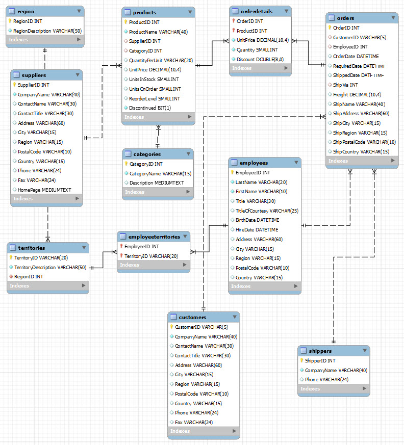

Databaser
Contents
Databaser¶
De data som du skal bruge i din Python kan meget vel være i en database.
I Python er der flere forskellige muligheder for at oprette forbindelse til en database og hente data ud.
Jer kommer tu til at oprette forbindelse til en MySQL server, men Python understøtter alle de gængse database servere.
For at gøre det nemt, er det en MySQL Server der er hostede på Microsoft Azure jeg brugere som eksempel.
For at oprette forbindelse til denne server skal du bruge følgende oplysninger:
Server:ida-database.mysql.database.azure.com
Brugernavn:
Password:
Da en sådan database server kan misbruges, får du udleveret brugernavn og password på seminaret og disse vil kun være gyldige den dag.
Jeg har valgt at opdele denne kode i 2 Python filer og en config fil.
Denne opdeling er fortaget så der er en naturlig opdeling mellem adgangen til databasen og brugen af data.
Filer
app.py - Brugen af data - kan f.eks. være data analyse
datamodel.py - Adgang til MySQL serveren
config.ini - Brugernavn og Password
SQLAlchemy¶
Jeg brugere Python modulet SQLAlchemy til at oprette adgangen til databasen.
SQLAlchemy er et Python modul, der letter kommunikationen mellem Python programmer og databaser. Oftest bruges dette bibliotek som et ORM-værktøj (Object Relational Mapper), der oversætter Python klasser til tabeller i en relationel database og automatisk konverterer funktions kald til SQL-sætninger.
Læs mere her www.sqlalchemy.org
Northwind¶
Den demo database jeg brugere er en Microsoft database ved navn Northwind.
Du kan se et ER-diagram over databasen her.

Det er altid en fordel hvis du har et ER-diagram når du skal hente data ud af en database.
datamodel.py¶
Det er i datamodel.py forbindelsen til MySQL serveren oprettes og det er også her vi henter data.
datamodel.py er opdelt i flere forskellige funktioner. Den første er connect() som læser information fra config.ini filen og opretter forbindelsen til serveren.
def connect():
db_conn = None
try:
# Læs config.ini filen
config = configparser.ConfigParser()
config.read('config.ini')
# Opret forbindelse til MySQL
db_connection_str = config['mysqlini']['conn_string']
db_conn = create_engine(db_connection_str)
return db_conn
except exc.SQLAlchemyError as e:
print(e)
finally:
db_conn.dispose() # Luk forbindelsen
Når forbindelsen er oprettet skal vi hente data. Dette har jeg også valgt at opdele i funktioner.
Det første datasæt er følgende felter fra Employees tabellen:
EmployeeID
FirstName
LastName
Dette gøres ved hjælp af denne SQL sætning
SELECT EmployeeID, FirstName, LastName FROM employees;
Vi vil have overført data til en Pandas dataframe, hvilket gøres nemt med metoden read_sql fra Pandas
def get_employees():
conn = connect()
df_Employees = pd.read_sql('SELECT EmployeeID, FirstName, LastName FROM employees;', conn)
return df_Employees
Hvis det er en mere kompleks SQL sætning du skal have afviklet vil det tit være en fordel at oprette et View ud fra denne SQL sætning.
Her er et eksempel på en SQL sætning der finder salget fordelt på måneder og produkter.
SELECT
products.ProductName,
month(orders.OrderDate) as Order_Month,
sum(orderdetails.UnitPrice * orderdetails.Quantity) as Order_Total
FROM products
INNER JOIN orderdetails
ON products.ProductID = orderdetails.ProductID
INNER JOIN orders
ON orderdetails.OrderID = orders.OrderID
GROUP BY products.ProductName, Order_Month
ORDER BY Order_Month, Order_Total DESC;
Ud fra denne har jeg oprette et View med navnet: Products_Sale
Det gør den SQL sætning jeg skal afvikle i Python meget mindre kompleks.
SELECT * FROM Products_Sale;
Python funktionen kommer til at se sådan ud
def get_product_sales():
conn = connect()
df_Product_Sale = pd.read_sql('SELECT * FROM Products_Sale;', conn)
return df_Product_Sale
Den komplette datamodel.py fil
# Imports
from numpy import product
import pandas as pd
from sqlalchemy import create_engine, exc
import configparser
# MySQL forbindelsen
def connect():
db_conn = None
try:
# Læs config.ini filen
config = configparser.ConfigParser()
config.read('config.ini')
# Opret forbindelse til MySQL
db_connection_str = config['mysql']['conn_string']
db_conn = create_engine(db_connection_str)
return db_conn
except exc.SQLAlchemyError as e:
print(e)
finally:
db_conn.dispose() # Luk forbindelsen
# Employees
def get_employees():
conn = connect()
df_Employees = pd.read_sql('SELECT EmployeeID, FirstName, LastName FROM employees;', conn)
return df_Employees
# Product sales
def get_product_sales():
conn = connect()
df_Product_Sale = pd.read_sql('SELECT * FROM Products_Sale;', conn)
return df_Product_Sale
app.py¶
Dette er hoved Python filen, det er her du starter applikationen.
For at hente data skal der oprettes forbindelse til datamodel.py, hvilket gøres med: import datamodel
Derefter skal de to dataframes hentes.
# Import
import datamodel
# Hent data
df_Employees = datamodel.get_employees()
df_Product_Sale = datamodel.get_product_sales()
Du kan nu arbejde videre med de data du har hentet. I dette eksempel gør jeg:
Et diagram og eksportere det til en HTML fil
Export til to Excel filer
Den komplette app.py fil
# Imports
import plotly.express as px
# Brug/Access datamodel
import datamodel
# Hent data
df_Employees = datamodel.get_employees()
df_Product_Sale = datamodel.get_product_sales()
# Vis data - print
print(df_Employees)
print(df_Product_Sale.head())
# Diagram - Employee Sales - Plotly
fig_product_sale = px.histogram(df_Product_Sale,
x='ProductName', y='Order_Total', barmode='group',
color='Order_Month', title='Salg pr. produkt')
# Export til Excel
df_Employees.to_excel('./Employees.xlsx', index = False)
df_Product_Sale.to_excel('./ProductSale.xlsx', index = False)
# Eksport Diagram til html
fig_product_sale.write_html('./ProductSale.html')
config.ini¶
Denne fil indeholder informationerne til at oprette forbindelse til MySQL databasen
En .ini file er opdelt med en sektion - [sektion] og en key - conn_string
[mysql]
conn_string = mysql://<brugernavn>:<password>@ida-database.mysql.database.azure.com:3306/northwind
Brugernavn og Password udleveres på seminaret.